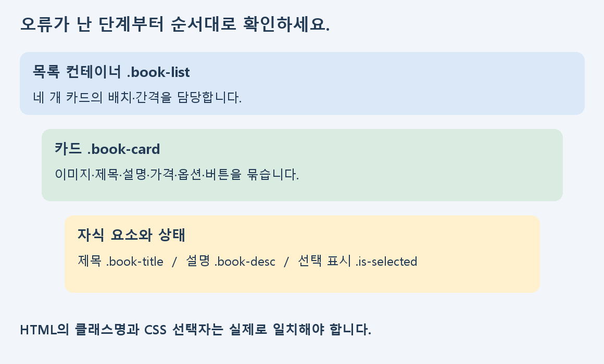
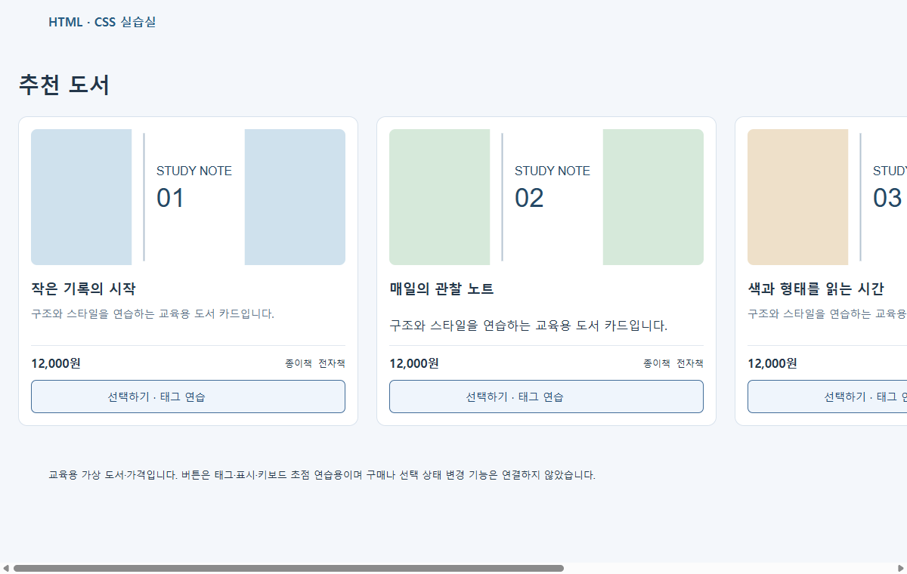
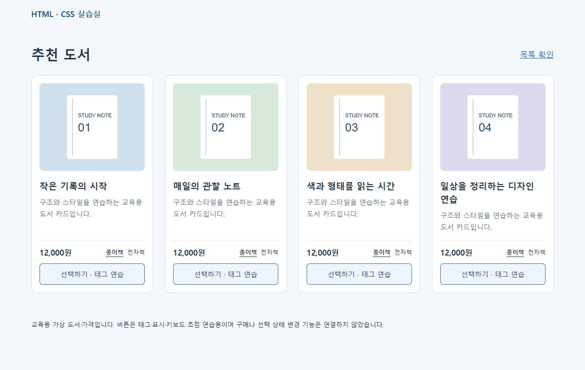

구현 | B그룹 지원자료
1. 증상을 기록하고 보완 순서 정하기
기본 화면을 만들었다면 이제는 누락 요소와 코드 오류를 한 항목씩 찾아 고치는 과정을 연습하세요. CSS 값을 무작정 늘리기보다 무엇이 잘못 보이는지 먼저 적습니다.
| 현재 증상 | 먼저 볼 부분 |
|---|
| CSS 전체가 적용되지 않음 | 2절: 파일명·경로 |
| 특정 설명·버튼만 이상함 | 3~4절: 구조·선택자 |
| 카드가 넘치거나 간격이 다름 | 5~6절: 박스 모델·Flex |
| 문구·상태·마무리가 다름 | 7~8절: 표시·수정 재확인 |
권장 시간은 약 160분입니다. 참고자료 25분, 오류 진단 35분, 구조·레이아웃 보완 65분, 재확인 기록 35분 순서로 진행하세요.
교육용 도서 카드 예제는 원래 평가 정답과 분리되어 있습니다. 실제 과제에서 지정한 bestsellers-section·콘텐츠·규격은 원래 명세를 대조합니다.
구현 | B그룹 지원자료
2. 파일 연결부터 확인하기
먼저 압축을 해제한 다음 단계 폴더의 index.html을 여세요. HTML의 link 경로와 실제 CSS 파일명, 대소문자를 대조합니다. 파일을 저장한 뒤 새로고침하고 현재 보고 있는 페이지가 수정한 파일인지 확인하세요.
<link rel="stylesheet" href="./style.css" />
| 확인 | 방법 |
|---|
| 파일명 | style.css와 styles.css처럼 한 글자 차이를 대조합니다. |
| 상대 경로 | 현재 HTML 파일 위치를 기준으로 CSS·이미지 경로를 읽습니다. |
| 저장·새로고침 | 수정한 파일과 보고 있는 페이지가 같은지 확인합니다. |
| 개발자 도구 | Network의 CSS 요청과 Elements의 Styles를 확인합니다. |
01_before/connection-check.html에는 CSS 파일명 오타를 의도적으로 넣었습니다. 실제 파일명과 link 값을 비교하고 수정하세요. 이 별도 파일의 요청 오류는 학습을 위한 상태입니다.
실습: 연결 오류를 고친 뒤 새로고침해 글꼴·배경·카드 배치가 적용되는지 확인하고, 무엇을 바꿨는지 기록하세요.
구현 | B그룹 지원자료
3. 카드 내부 구조와 닫는 태그

이미지와 상품 정보가 다른 카드로 분리되거나, 닫는 태그가 빠지면 스타일을 고쳐도 원하는 배치가 나오지 않을 수 있습니다. 들여쓰기로 포함 관계를 확인하고 실제 DOM과 비교하세요.
<article class="book-card">
<img class="book-cover" src="../images/book-01.svg" alt="도서 표지" />
<h2 class="book-title">작은 기록의 시작</h2>
<p class="book-desc">설명</p>
<div class="book-meta">가격과 옵션</div>
<button type="button" class="practice-button">태그 연습</button>
</article>
실습: 자신의 카드 네 개에 필요한 요소가 같은 순서로 포함되는지 대조하세요. 누락 텍스트와 닫는 태그는 실제 원본을 보고 수정합니다.
구현 | B그룹 지원자료
4. 클래스명과 적용 스타일 대조하기
특정 요소만 스타일이 적용되지 않으면 HTML의 class와 CSS 선택자를 글자 단위로 비교하세요. 비슷한 이름도 실제 문자열이 다르면 같은 클래스를 가리키지 않습니다.
<!-- 연습용 오류 -->
<p class="book-descc">설명</p>
/* CSS가 선택하는 이름 */
.book-desc { color: #60748a; }
01_before의 두 번째 카드에는 이런 선택자 오타가 있습니다. 다른 요소의 값을 바꾸기 전에 연결되는 이름을 맞추고, 개발자 도구에서 해당 규칙이 표시되는지 확인하세요.
| 점검 | 확인할 것 |
|---|
| 적용 안 됨 | 파일 연결·선택자·포함 관계 |
| 값에 취소선 | 다른 규칙이 덮는지와 우선순위 |
| 다른 카드도 바뀜 | 공통 선택자가 의도한 범위를 가리키는지 |
실습: 오타 한 곳을 수정한 뒤 그 카드의 설명만 올바른 공통 스타일을 받는지 확인하세요. 과제에서 지정한 고정 명칭도 별도로 대조합니다.
구현 | B그룹 지원자료
5. 여백과 너비를 계산하기
padding은 안쪽, margin은 바깥 여백입니다. border와 콘텐츠 너비까지 더해 실제 공간이 결정됩니다. 큰 고정 width와 좌우 padding이 화면을 넘기지 않는지 확인하세요.
* { box-sizing: border-box; }
.practice-section {
max-width: 1120px;
margin: 0 auto;
padding: 36px 24px;
}
.practice-button { width: 100%; padding: 12px 16px; }
큰 height를 줄 때 글자가 가려지는지, 부모와 자식 모두에 같은 여백을 주어 간격이 중복되는지도 살펴보세요. 예제 값은 설명용이며 실제 과제의 시안 값을 그대로 바꾸라는 뜻이 아닙니다.
실습: 개발자 도구의 박스 모델에서 카드와 버튼 크기를 확인하고, 바꿀 속성 하나만 정해 전후를 비교하세요.
구현 | B그룹 지원자료
6. Flex로 네 카드 정렬하기
목록 컨테이너에 display:flex를 적용하고 그 안에 네 카드를 둡니다. 카드 내부 정렬과 카드 목록 정렬은 서로 다른 부모가 담당합니다.
.book-list { display: flex; flex-wrap: wrap; gap: 24px; }
.book-card { flex: 1 1 calc((100% - 72px) / 4); min-width: 0; }
.book-meta {
display: flex;
justify-content: space-between;
align-items: center;
gap: 12px;
}
예제에서는 네 카드 사이의 gap 세 개가 72px입니다. 내부 가격·옵션을 양쪽에 놓는 규칙은 .book-meta에 적용합니다. 이름을 같은 것으로 중복 사용하면 적용 범위를 혼동하기 쉽습니다.
실습: 목록과 카드 내부의 Flex 부모를 각각 표시하세요. 간격·정렬을 하나씩 바꾸며 어떤 요소가 움직였는지 기록합니다.
구현 | B그룹 지원자료
7. 문구·선택 표시·버튼 보완하기
가격과 용량처럼 화면에 보이는 내용도 원본과 정확하게 대조하세요. 선택 표시는 해당 항목만 강조하고, 동작을 위한 요소는 목적에 맞는 태그를 선택합니다.
<p class="book-options">
<span class="is-selected">종이책</span><span>전자책</span>
</p>
<button type="button" class="practice-button">태그 연습</button>
.is-selected { font-weight: 700; text-decoration: underline; }
연습 예제의 선택 표시는 정적인 스타일이고 버튼에는 구매·상태 변경을 연결하지 않았습니다. 실제 과제에서 요구하지 않은 기능을 추가하기보다 태그·문구·표시의 관계를 먼저 확인하세요.
실습: 네 카드의 제목·설명·가격·옵션·버튼을 빠짐없이 점검하고 Tab 이동 시 버튼의 초점이 보이는지 확인하세요.
구현 | B그룹 지원자료
8. 수정 전후를 같은 조건에서 확인하기
수정 전: 오류를 포함한 독립 연습 예제

수정 후: 같은 예제를 점검하고 정리한 화면

위 화면은 같은 1200px 너비에서 확인한 독립 예제입니다. 01_before의 오류를 찾은 뒤 02_after와 비교하고 자신의 수정 이유를 기록하세요.
기록: 증상 → 원인 후보 → 수정 파일·태그·선택자 → 재확인 조건 → 결과. 한 문제를 고쳤다면 인접 카드와 다른 너비에 새로운 문제가 생기지 않았는지도 확인합니다.
구현 | B그룹 지원자료
9. 국내 무료 강의로 복습하기
국내 무료 공개강의인 생활코딩의 한국어 설명과 영상을 활용합니다. 아래 링크는 해당 학습 주제로 바로 연결됩니다. 각 강의를 전부 듣기보다 자신의 보완 항목부터 선택하세요.
1. 생활코딩 · 문서의 구조와 슈퍼스타들
강의·예제 열기
HTML 문서의 기본 구조를 확인하고 자신의 태그 포함 관계와 비교하세요.
학습 후 할 일: 닫는 태그와 카드 내부 포함 관계를 점검하세요.
2. 생활코딩 · 박스모델
강의·예제 열기
내용·안쪽 여백·테두리·바깥 여백을 구분하고 개발자 도구의 실제 크기와 연결하세요.
학습 후 할 일: 여백이 중복된 곳과 버튼의 실제 크기를 확인하세요.
3. 생활코딩 · 부모 자식 선택자
강의·예제 열기
부모와 자식의 관계를 확인하고 선택자가 실제로 어느 요소를 가리키는지 표시하세요.
학습 후 할 일: HTML의 클래스명과 CSS 선택자를 한 쌍씩 대조하세요.
4. 생활코딩 · Flex
강의·예제 열기
“flex의 기본”을 먼저 보고 컨테이너와 아이템을 구분하세요. 필요하면 grow·shrink 부분으로 이어갑니다.
학습 후 할 일: 부모에 flex를 적용하고 gap과 정렬 속성을 한 항목씩 바꾸세요.
영상에서 보여주는 값은 설명용 예시입니다. 현재 과제의 고정 클래스명·문구·간격 등은 원래 과제 명세를 대조하세요. 글과 함께 제공되는 영상은 무료 공개 콘텐츠이며 시청 구간은 위 주제명을 기준으로 선택할 수 있습니다.
구현 | B그룹 지원자료
10. 보완 결과 자기점검
| 점검 항목 | 완료 기준 |
|---|
| 파일 연결 | HTML·CSS·이미지 위치와 실제 파일명이 일치합니다. |
| 구조·콘텐츠 | 네 카드의 필요한 내용이 같은 카드 안에 있습니다. |
| 선택자 | HTML의 class와 CSS 이름이 일치합니다. |
| 레이아웃 | 기준 화면의 정렬·간격과 가로 잘림을 확인했습니다. |
| 문구·상태 | 제목·가격·옵션을 원본과 대조했습니다. |
| 수정 재확인 | 무엇을 왜 바꿨는지 같은 조건에서 설명할 수 있습니다. |
- □ 연습 예제와 원래 평가의 지정값을 구분했습니다.
- □ 수정한 파일을 저장하고 실제 브라우저에서 확인했습니다.
- □ 확인하지 않은 기능이나 환경을 통과로 적지 않았습니다.
- □ 어려운 부분을 파일·요소·화면과 함께 질문으로 남겼습니다.
첨부 실습 양식에 증상·원인·수정·재확인 결과를 적으세요. 실습용 도서와 가격은 가상 정보입니다. 새 프레임워크나 서버를 추가하기보다 현재 HTML·CSS의 관계를 이해하고 보완합니다.
다음 학습: 오류를 고친 뒤 C그룹 단계 파일로 기초를 확인하거나 A그룹 자료의 공통 스타일·화면 대응 활동으로 이어갈 수 있습니다.